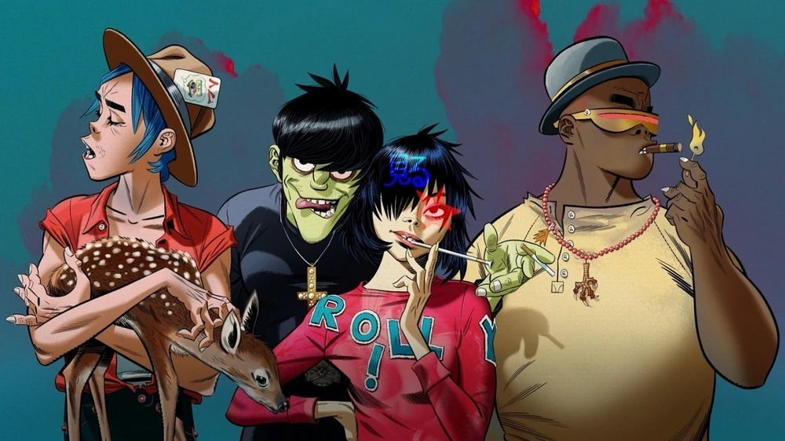
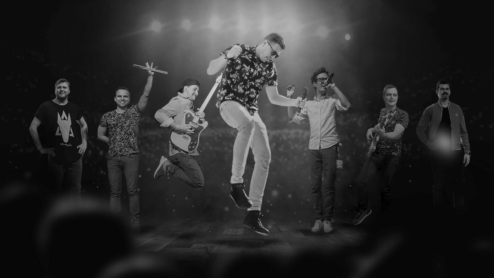

Néhány zenei stílus
Rap / Hip-Hop
A rap és a hip-hop olyan műfajok, amelyek a ritmikus szövegmondásra, rímekre és történetmesélésre épülnek. Az 1970-es években indult az Egyesült Államokból, mára azonban globális jelenséggé vált. Az olyan előadók, mint Eminem, komplex rímszerkezeteikkel és személyes témáikkal emelték mainstream szintre a műfajt. A magyar szcénát Akkezdet Phiai, Krúbi és NKS határozzák meg, akik szókimondó szövegeikkel és társadalmi érzékenységükkel váltak ismertté. Cserihanna a fiatalabb generáció hangját képviseli, egyedi stílussal és friss energiával. Ez a kategória a szövegközpontúságot és az önkifejezést helyezi előtérbe.
Elektronikus / Kísérleti
Az elektronikus és kísérleti zene a hangzás határait feszegeti digitális eszközökkel, szokatlan struktúrákkal és technikai újításokkal. Keygen Church 8-bites hangzással és glitch esztétikával dolgozik. Fehér Krisztián atmoszférikus hangképeket alkot, gyakran organikus és elektronikus elemeket kombinálva. VØJ mozgóképszerű, trap- és EDM-hatású zenét készít. Ebben a műfajban a hangzáskísérlet, a hangulat és a technológiai kreativitás kerül előtérbe.

Rock / Alternatív
A rock és az alternatív zene középpontjában az élő hangszeres játék, az érzelmes előadásmód és a lázadó attitűd áll. Gorillaz, a virtuális zenekar, az alternatív rockot hiphoppal, funkkal és vizuális művészettel ötvözi. Ronnie Radke, a Falling in Reverse frontembere, a poszt-hardcore, a punk és a rap határain mozog. Ez a kategória a dinamizmust, az energiát és a műfajok közötti kísérletezést képviseli.

Egyéb / Vegyes
Vannak előadók, akiket nehéz egyetlen kategóriába sorolni. Halott Pénz zenéje a pop, a rap és az élő hangszerelés elegyéből születik, könnyen befogadható és érzelmes. Andrius Klimka valószínűleg folkos vagy indie stílusban alkot, míg az Alexandrov Kórus katonai, klasszikus vagy népi kórusműveiről ismert. Ez a kategória a sokszínűségről, a hagyomány és modernitás keveredéséről szól.